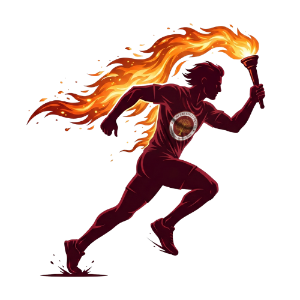

Where Sport Meets Spirit & Excellence
Welcome to the official Sri Sri University Sports Portal. Fostering athletic mastery, teamwork, and sportsmanship across intra and inter-university championships.

COLLYMPICS 11.0: “Sweat to Success, Fun to Fitness” 🔥🏆
The landmark 11th edition of Sri Sri University's flagship Intra-University sports festival is here! Open to all students, faculty, and staff across all departments. Compete across 15+ disciplines, the debut of Powerlifting, E-Sports, and departmental glory.
What's New in Collympics 11.0?
- The Iron Rises: First-ever Powerlifting Championship (Squat, Bench Press, Deadlift across 3 weight classes).
- Overall Contingent Trophy: Awarded to the top academic department with maximum medal tallies.
- E-Sports Mobile Championship: BGMI and Free Fire tournaments for 5-player squads (₹150).
- Food & Fun Zones: 100% Vegetarian food stalls & lively cultural evening Open Mic sessions.
About SSU Sports Council
The Sri Sri University Sports Council is the dedicated organization responsible for promoting athletic excellence, sportsmanship, physical fitness, and holistic student development across campus.
Operating under the guidance of the Dean Student Welfare (DSW) Office, the Sports Council organizes annual intra-university festivals, inter-university tournaments, selection trials, and specialized coaching programs across 14+ athletic disciplines.
Core Objectives
-
Intra & Inter Varsity Meets: Conducting flagship tournaments like Collympics & Veerodaya.
-
Professional Coaching: Employing NIS & National level certified coaches for technical growth.
-
Infrastructure Management: Maintaining synthetic courts, cricket grounds, and indoor halls.
Types Of Events
Discover the diverse range of intra, inter, and internal sports tournaments organized at SSU.
Collympics Fest (Intra)
Sri Sri University's flagship annual intra-university sports extravaganza bringing together 1,500+ students across all faculties and departments in friendly rivalry.
Explore Collympics FestVeerodaya Fest (Inter)
Mega inter-university championship hosting 23+ top universities across the region with ₹1.8L+ cash prize pool and national media spotlight.
Explore Veerodaya FestOther Internal Events
Selection trials, annual athletic meets, inter-departmental league cups, friendly varsity matches, and fitness workshops held throughout the year.
View Campus ScheduleSports Photo & Event Gallery
Explore dedicated albums showcasing world-class courts, intense practice sessions, championship victories, and team celebrations.
Dean Student Welfare
Under the leadership and guidance of the DSW Office steering student wellness and sports initiatives.

Dr. Jay Prakash Bhat
jay.b@srisriuniversity.edu.in
Council Members
The dedicated faculty members and sports coordinators managing sports operations.

Shreeram Rautaray
shreeram.r@srisriuniversity.edu.in

Dr. Rajat Kumar Baliarsingh
rajat.b@srisriuniversity.edu.in
Coaches & Trainers
Meet the certified professionals dedicated to honing student sportsmanship, technical mastery, and athletic victory.
Social Media Links & Official Channels
Follow Sri Sri University Sports Council on social platforms for live updates, scores, and media coverage.
Instagram
@sportscouncilssu
Official Email
sportscom@srisriuniversity.edu.in
University Portal
srisriuniversity.edu.in